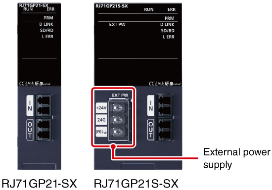
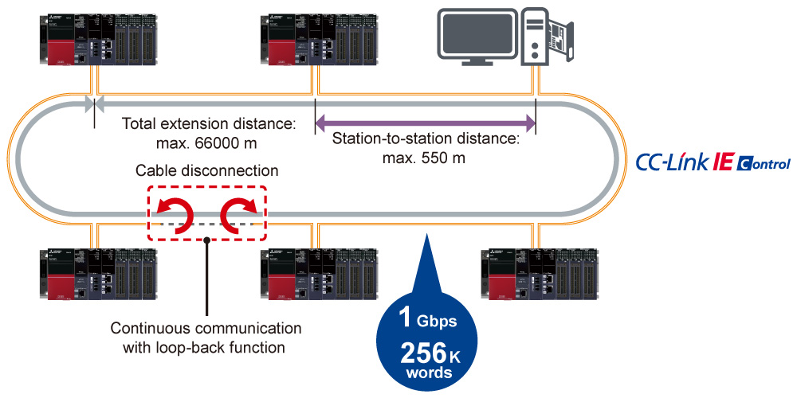
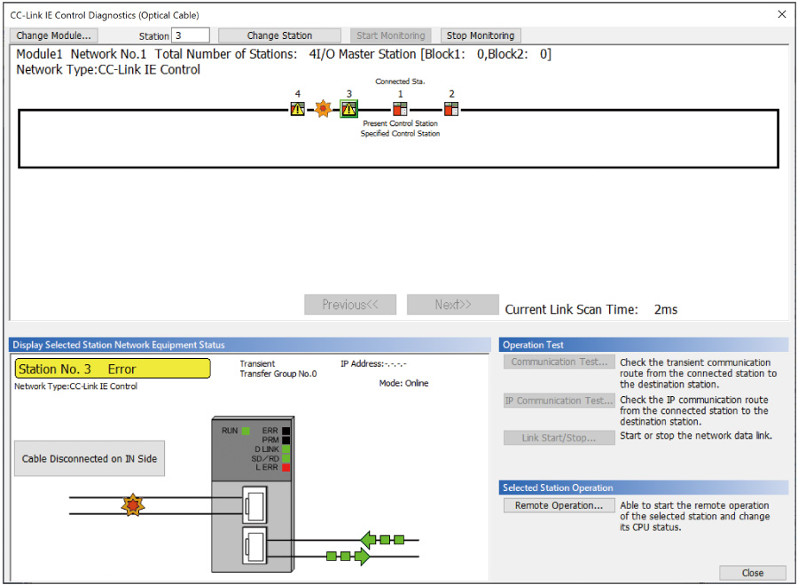

Controllers MELSEC iQ-R Series Product features -Network-

CC-Link IE Controller Network module
A highly reliable control network designed to handle very large data communications (128K words) over a high-speed (1 Gbps) dual-loop optical cable topology.

Features<sup>Continuous communications even when cable or stations are faulty</sup>
- Optical fiber cable
- Highly reliable
- Utilizing a high-speed, noise resistant fiber-optic topology, the CC-Link IE Controller Network supports a loop-back function that guarantees continuous communications even when a cable is disconnected or a station falls into a fault status

Extensive real-time network monitoring
- Easy troubleshooting
- The network status can be easily monitored directly from engineering software GX Works3 enabling intuitive troubleshooting of network errors or viewing the operation of the network while in communications
- All stations within the network can be monitored regardless of which station the software is connected too

CC-Link IE Control diagnostics window
Specifications<sup>CC-Link IE Controller Network module specifications</sup>
| Item | RJ71GP21-SX/RJ71GP21S-SX |
|---|---|
| Compatible network | CC-Link IE Control |
| Communication speed (bps) | 1G |
| Maximum stations per network | 120 |
| Network topology | Duplex loop |
| Connection cable | Optical fiber cable |
| Max. station-to-station distance (m) | 550 |
| Overall cable distance (m) | 66000 (when 120 stations are connected) |
| Maximum link points per network | |
| Link relay (LB) | 32768 points, 4KB For extended points: 65536 points, 8KB |
| Link register (LW) | 131072 points, 256KB For extended points: 262144 points, 512KB |
| Link input (LX), link output (LY) | 8192 points, 1KB |